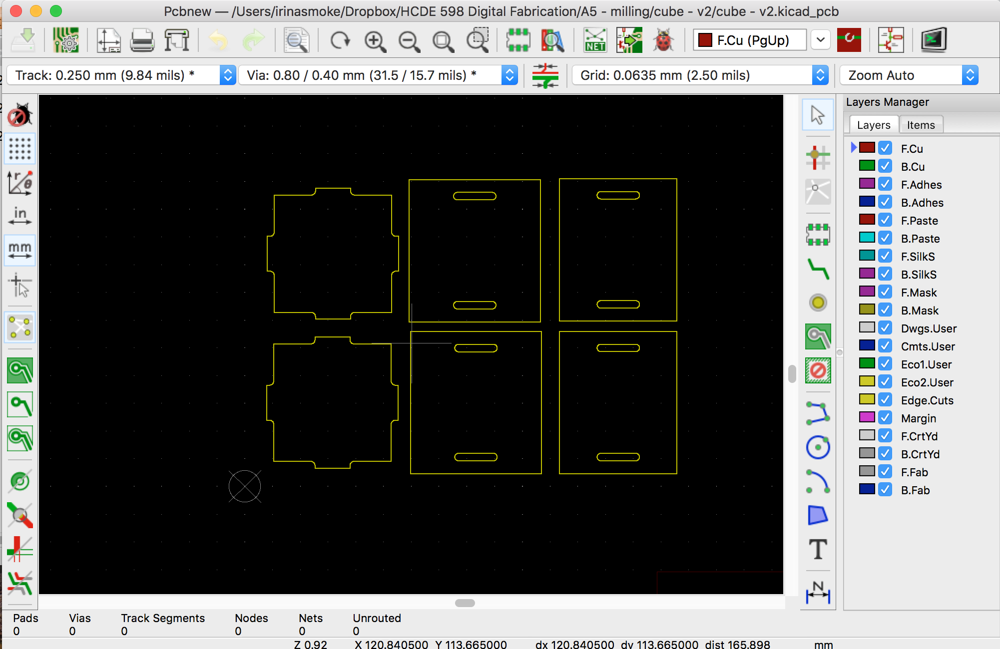

CNC Milling

This assignment was to create an object out of FR1 using CNC milling.
Design in OnShape
I decided to do a simple design for this assignment, creating a cube with solid sides. My dimensions were quite small - the largest piece is 33mm wide - because I wanted to be able to mill the entire box out of one piece of 70mm x 100mm FR1. The reason I wanted to be able to make the entire thing out of 1 piece was that I'd ordered only 4 pieces, and at least one piece was needed to act as a buffer between the machine and the FR1 I actually needed to cut, and I wanted to leave some room for error.
I started by designing the cube in OnShape.


I modeled 3 different parts and duplicated each one for a total of 6 sides of the cube.
Workflow
I exported the sides of the extruded parts from OnShape to DXF, imported those into kicad, exported those as gerber files, and imported that into the Bantam Tools software, which connects directly to the Bantam milling machines.

Ready for my first CNC milling. Though I knew better from previous assignments, I was feeling optimistic and decided to mill the whole thing on the first try. It's possible for things in digital fabrication to work perfectly well on the first try, right?
Testing notch size
The first time I milled the pieces, they did not fit together because the notches were not wide enough at 1.6mm, which is 1mm bigger than the FR1.
I decided to test several different sizes warying by .05 mm. I made this test as a simple sketch in OnShape on the side of the main object I was modeling. However, this is where I ran into a problem. For some reason, the notches were being milled way wider than I anticipated.


Despite being set to 1.75mm and 1.8mm in OnShape, the notches being milled were much larger
At first, I thought this was a file export/resize issue, but after re-doing the workflow a few times I knew it had to be something else. That's when I started looking more closely at the previews and toolpaths in Bantam Tools and realized what was happening - it was interpreting the files as if it should mill around the notches, rather than mill the inside of the shape.
To fix this, I put a bounding box around the shapes in OnShape, and used the face of the extruded part. This worked well.


I fixed the issue by adding a bounding box around the shapes.

The result of the first picture above - milling outside the lines, which is not what I was intending.
Finally, after this issue was fixed and I was able to mill the notches properly, I tested the fit and found the right dimensions to use (1.7mm).

Finally happy with the fit of the pieces (1.7mm notches).
Final Design
Once I was happy with the fit of the pieces, I re-milled all the sides and assembled!

Thank you
A huge thank you to Gabi for talking through the milling inside/outside lines issue with me and helping me understand what was happening. Also thanks to Hannah for giving me some tips about how to set up the milling machine, including to wipe down the base before sticking down the FR1.
Source Files
You can find the source files for the final object I milled here:
- OnShape model
- Gerber files I used for the final mill